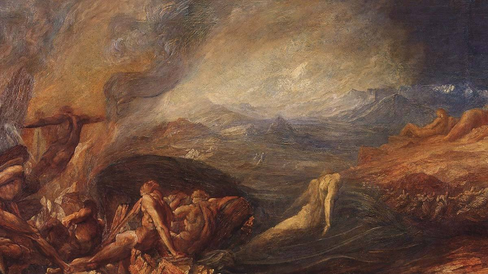
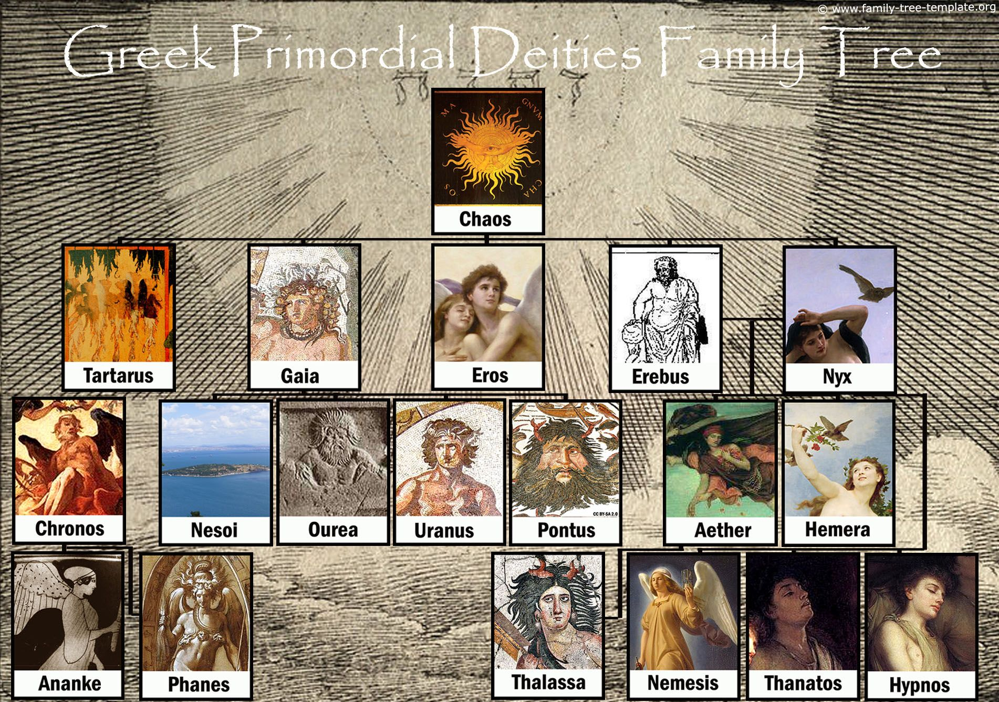

Greek mythology starts at the beginning of the world! The Greek Gods that existed then were the Primordial Gods. The famous work of Hesiod, called Theogony (meaning “birth of the Gods” in Greek), presents a complete cosmogony. Natural forces are personified, and the most basic components of the cosmos are Gods.
The first born of the immortals, who formed the very fabric of the universe, were known in Greek mythology as the Protogenoi (protos meaning "first," and genos "born"). They were, for the most part, purely elemental beings - Uranus was the literal sky, Gaea the body of the earth, etc. A few of them were ocassionally described or portrayed in anthropomorphic form, however these forms were inevitably inseperable from their native element. For example Gaea or Thalassa might appear as a woman half risen from the earth or sea.

According to Hesiod, in the beginning there was Chaos. Chaos was the personification of the absolute nothingness - an immerse, dark void from which all of the existence sprang. Out of Chaos came Eros, the god of love and procreation. We can see that ancient Greeks considered love as one of the most fundamental powers in the world. Then Tartarus was born, a dark place like the abyss and the original god of the Underworld. Goddess Gaia then followed, the personification of Earth. Erebus, the god of darkness, and Nyx, the goddess of the night, were also born from Chaos. From Gaia came Ourea, the god of the mountains, Pontus, the god of the sea, and Uranus, the god of the heavens.

The Full List of the Primordial Greek Gods:
- Achlys: the goddess of the eternal night. The first creature that some say existed even before Chaos himself. According to Hesiod, she is the demon of death.
- Αether: the god of light. The spark of life for every creature. Etymologically, Aether means the highest and purest layer of air.
- Αion: the god of eternity. He was a ghostly primordial deity who personified the meaning of time (sometimes he is confused with god Chronos). In Greek, Aion means “century”. Although incorporeal, he was also portrayed as a monster with a snake body and three heads: one human (male), one bull and one lion. According to a myth, Aion and his companion, Ananke (also with a snake body), wrapped themselves around the cosmic egg and broke it to form the "sorted" Universe (earth - sky - sea).
- Ananke: the goddess of inevitability, compulsion, and necessity. She was an inevitable divine force.
- Chaos: the god of the void. He was the beginning of all life. According to most versions of Greek myths, Chaos pre-existed all.
- Chronos: the god of time. Not to be confused with Aion (god of eternity) or Cronus (the Titan).
- Erebus: the god of darkness and shadow. He symbolizes the silence and the depth of the night together with his sister, the goddess Nyx. He is usually represented as a winged, dark and huge being, a duo with Nyx.
- Eros: the god of love and procreation. Not to be confused with Eros, the winged god of desire.
- Gaia: the goddess of the earth (Mother Earth). She is the mother of all - the primeval mother. At a cosmogenic level, she symbolizes the material side of the Universe whereas Chaos symbolizes the space of the Universe. Eros symbolizes the driving force that unites everything, giving birth to the rest.
- Hemera: the goddess of day.
- Hypnos: the god of sleep and father of Morpheus.
- Nemesis: the goddess of retribution.
- Nesoi: the goddesses of islands.
- Nyx: the goddess of night. She was a sovereign, primordial and cosmogenic entity, respected and feared by most gods. She is the sister of Erebus, the god of darkness and shadow.
- Ourea: the gods of mountains.
- Pontus: the god of the sea and father of the sea creatures.
- Tartarus: the god of the darkest and deepest part of the Underworld - the original god of the Underworld. The Underworld was the place where the wicked are imprisoned and tortured eternally after their death.
- Thalassa: the goddess of the sea and consort of god Pontus.
- Thanatos: the god of death. He is the twin brother of Hypnos (god of sleep) and lives in the dark Tartarus.
- Uranus: the god of the heavens. He soon became ruler of the world and father of the Titans.Ananke: the goddess of inevitability, compulsion, and necessity. She was an inevitable divine force.
|